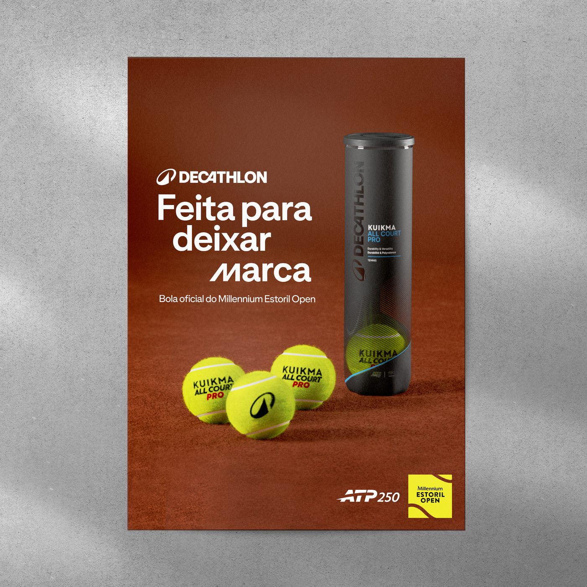
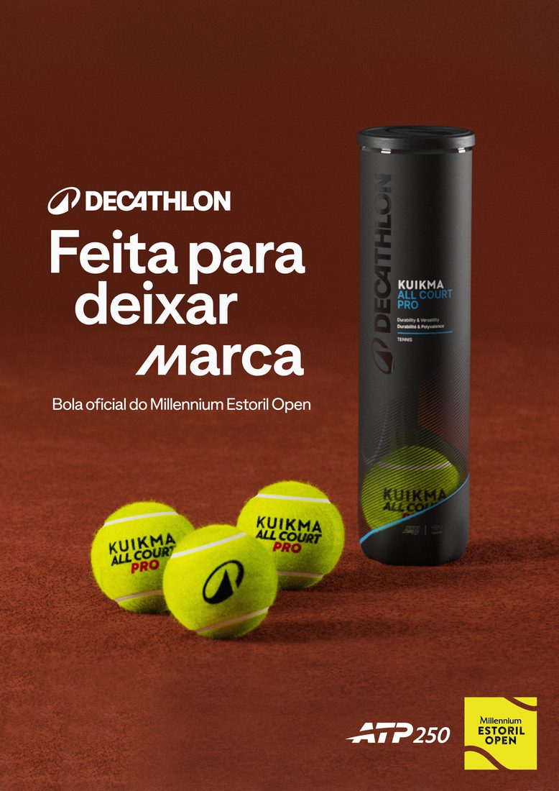
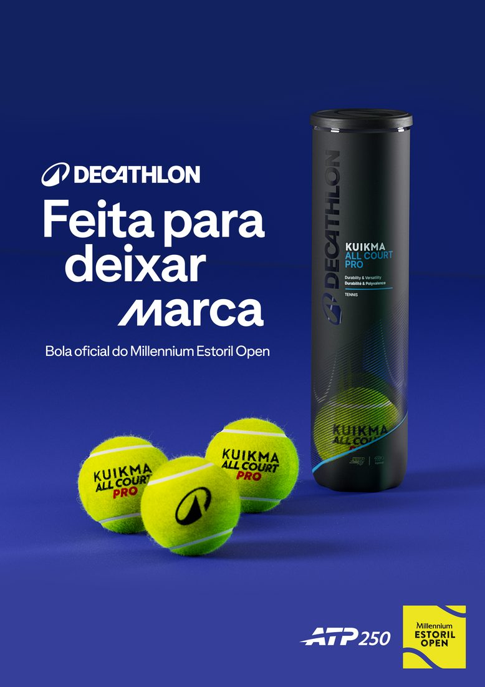
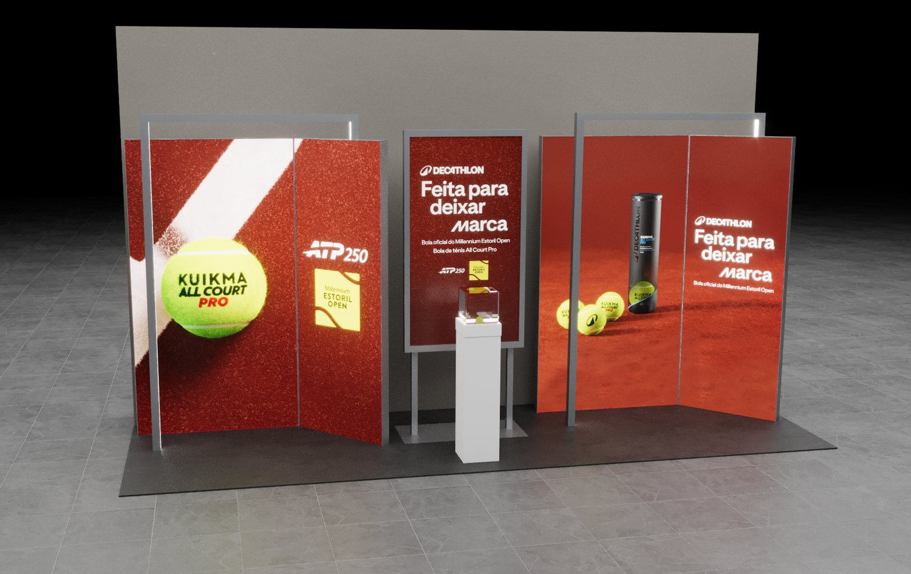
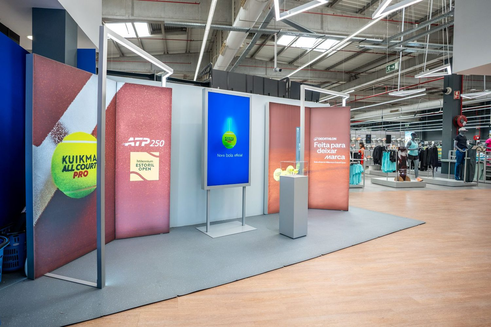
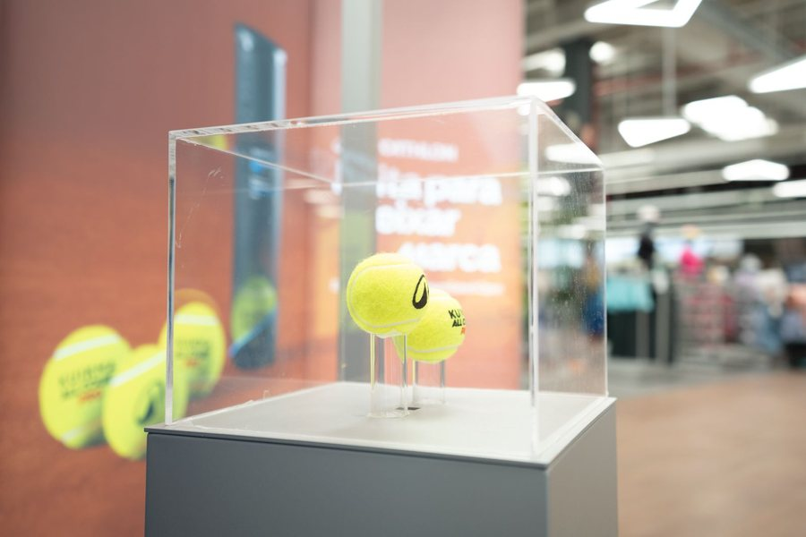
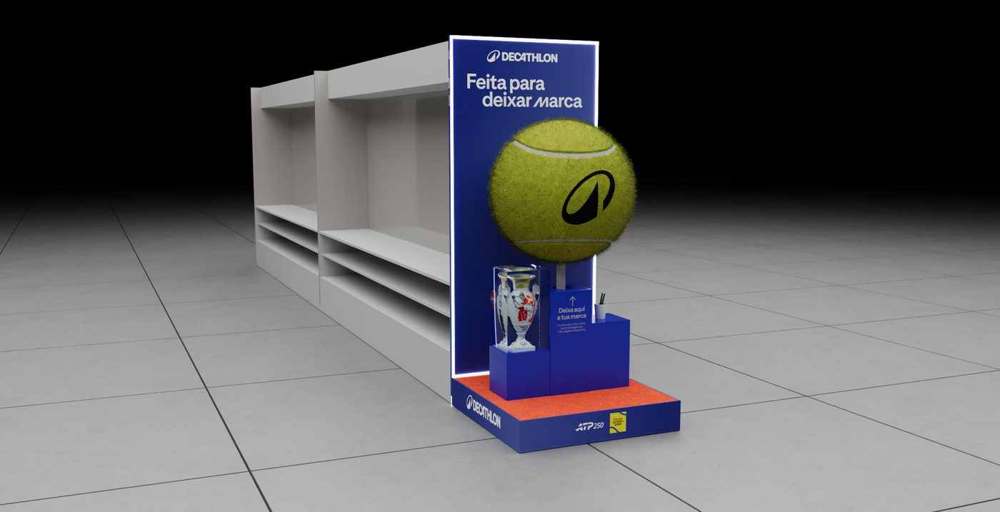
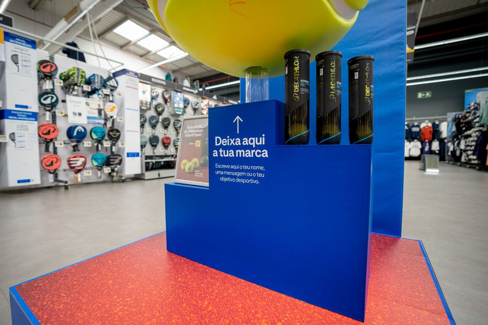
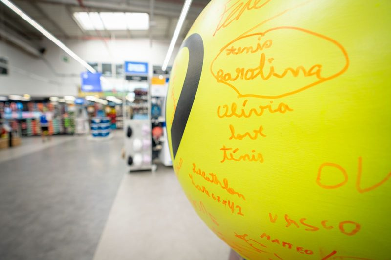

Kuikma × Decathlon — official ball of the ATP 250 · 3D · Digital · Print
A full campaign for Kuikma's All Court Pro — the official ball of the
Millennium Estoril Open. One brand platform, “Feita para deixar
marca”, carried across 3D retail builds, e-commerce and CRM,
in-store POS and outdoor.

Campaign key visual

For instore

For outstore



Retail stand — 3D, then built



Centre-court display — 3D, then builtsigned by tennis fans ✎